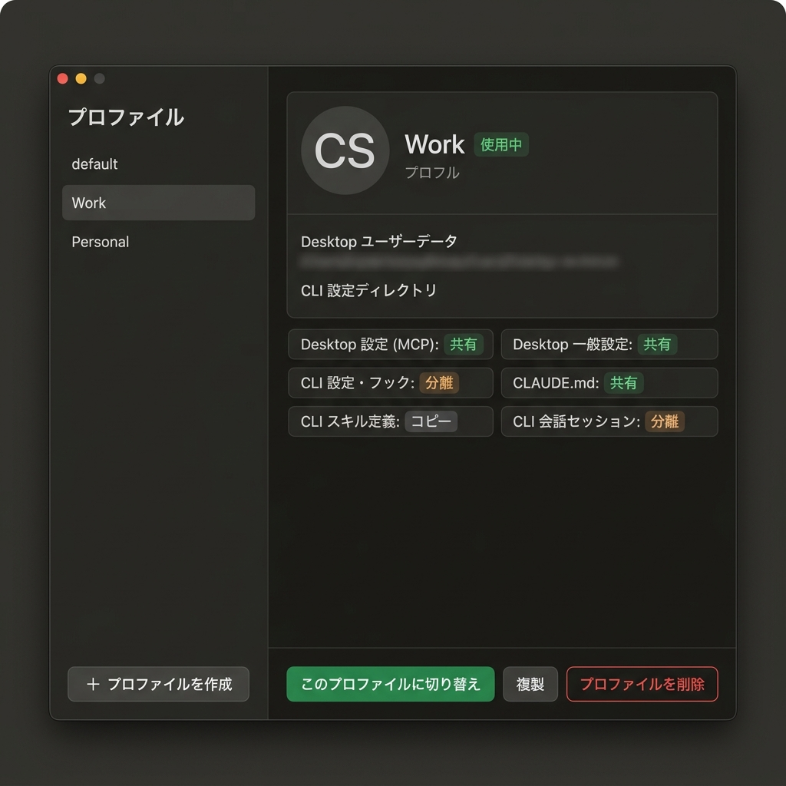
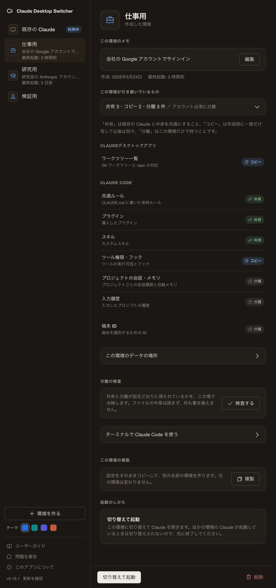
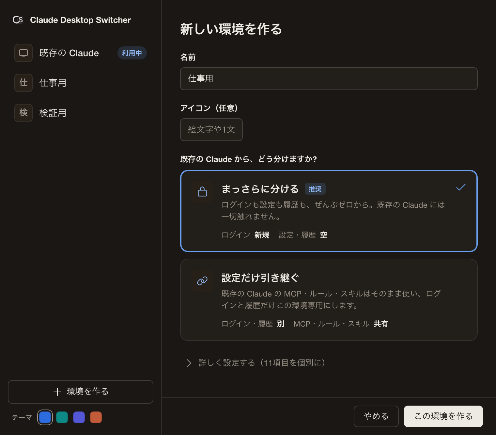
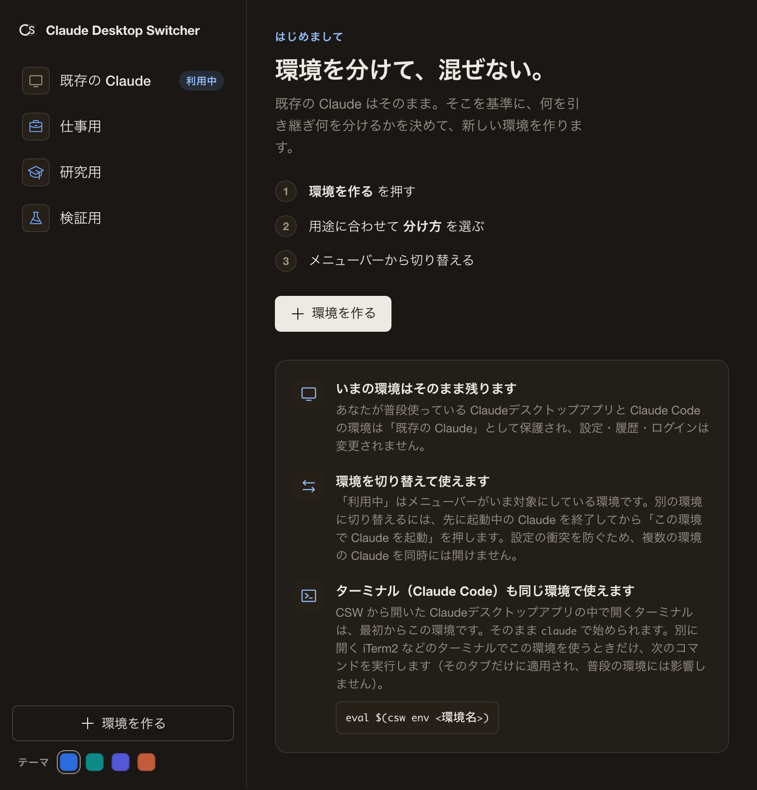

Claudeデスクトップアプリを用途ごとに分ける。
チャット・Projects・Claude Cowork・Artifacts・Claude Design を含むスイート全体を、アカウント・用途ごとに分離。必要なら Claude Code（CLI）も連動できる Mac 用ユーティリティです。

デスクトップアプリの
スイートを分ける
CLI のプロファイル切り替えは direnv や claude-swap など既存ツールが既によく解決しています。CSW が担うのはその先、チャット・Projects・Cowork・Artifacts・Claude Design といったデスクトップアプリの作業全体を、アカウント／用途ごとに分けることです。デスクトップで全部こなす方も、Cowork に Claude Code と Claude Design を組み合わせる方も、Cowork とチャットを主に使う方も、用途ごとにまるごと分けられます。必要なら Claude Code も同じ環境に連動。GUI はメニューバーから、別に開いたターミナルは 1 コマンドで揃います。
分離度のカスタマイズ
共有したい設定と分けたいデータを用途に合わせて選択可能です。例えば「業務」と「プライベート」でログインアカウントやチャット履歴を完全に分離し、情報が混ざるリスクを防ぐことができます。
局所的な環境の適用
Mac本体のシステム設定を無差別に上書きすることはありません。設定は本ツールから起動したアプリや特定のターミナルタブに対してのみ局所的に適用されるため、対象外の普段の環境へ影響が波及するのを防ぎます。環境間の干渉度は共有設定の内容に依存します。
実際の画面。
環境管理はすべて 1 つの設定ウインドウで完結します。分離・共有の環境を作り、各環境が何を共有しているかを確認し、メニューバーから切り替えられます。



利用シーンと解決する課題
1つのPCの中で環境をどう分けるか。あなたのワークスタイルに合わせて柔軟に分離度を調整できます。
案件・クライアントごとにスイート丸ごと分ける
複数のクライアント案件やプロジェクトを並行する際、チャット履歴・Projects のメモリ・Cowork の作業フォルダ・Artifacts が混ざる懸念を避けたい。
「完全隔離」構成を選ぶと、環境ごとに独立したデータ領域が割り当てられ、各々が自分のログインを保持します。別案件の文脈へ漏れる事故を構造的に防ぎます。
仕事用と個人用を 1 台で分ける（非エンジニア向け）
業務アカウントと個人アカウントを混ぜたくないが、ターミナル操作はしたくない。
メニューバーから環境を選んで切り替えると、再ログインなしに別アカウントのデスクトップアプリが立ち上がります。ターミナルは不要、GUI だけで完結します。
用途ごとに分けつつ共通ルールは共有する
アカウントは用途別に分けたいが、共通の運用ルールや設定は使い回したい。
特定の設定ファイル（CLAUDE.md 等）だけを全環境で共有する構成に対応。履歴やログインは分離したまま設定の二重管理を防ぎます。
GUI の分離に CLI を連動させる（開発者向け）
GUI で分けた環境を Claude Code（CLI）側でも同じ環境で使いたい。
GUI で選んだ環境を、別に開いたターミナルの Claude Code（CLI）にも 1 コマンドで連動できます。CLI 単体スイッチャーが既に解決している領域に、GUI 分離との一貫性を足すのが狙いです。具体的な手順は後述のターミナル連携を参照してください。
GUIワークフロー
デスクトップの環境はメニューバーから管理。CLI 連携はターミナルのコマンドで行います。
インストールと起動
アプリケーションフォルダに入れて起動するだけ。メニューバーに常駐します。
環境の作成
ワンクリックで「業務」「研究」など、完全に独立した環境を作成できます。
分離環境で起動
環境を選ぶと、その環境専用の隔離ディレクトリで Claudeデスクトップアプリが起動します。同時に開けるのは1環境のため、別の環境に切り替えるときは先に起動中の Claude を終了してください。
ターミナル（Claude Code）連携
アプリ内蔵のターミナルは環境を自動で引き継ぎます。別に開く外部ターミナル（iTerm 等）は、次の 1 コマンドで切り替えます。
環境の一元管理
GUIデータ領域とCLI設定ファイルが、1つの環境のもとで統合的に管理されます。
柔軟な共有設定
完全な隔離（デフォルト）か、一部設定ファイルのみを同期する構成かを柔軟に選択可能です。
ターミナル連携
アプリ内蔵のターミナルは環境を自動で引き継ぎます。別に開く外部ターミナル（iTerm2 等）は、次の 1 コマンドで切り替えます。末尾は切り替えたい環境の名前に置き換えます。
eval $(csw env <環境名>)
よくある質問
共有・分離の基準は常に「既存の Claude」。新しい環境は、そこから何を引き継ぎ何を分けるかを選んで作ります。
「共有」「分離」は何に対してですか？
常に「既存の Claude」（あなたの既存環境）に対してです。各項目を、いまの環境と同じものを使う（共有）か、この環境専用に新しく持つ（分離）かを選びます。
「既存の Claude」とは？
普段お使いの既存の Claudeデスクトップアプリと Claude Code の環境です。CSW はこれを基準にするだけで、設定・履歴・ログインを変更も削除もしません。
同じアカウントでも環境を作る必要がありますか？
いいえ。同じ環境を使い続けたいだけなら不要です。いつもどおり起動すれば「既存の Claude」が使われます。CSW は別アカウントや別案件の独立環境を増やすときに役立ちます。
新しい環境を作ると既存の Claude は壊れますか？
壊れません。各環境は専用ディレクトリに分かれており、環境を削除しても既存の Claude には影響しません。
切り替えるたびに再ログインが必要ですか？
いいえ。各環境はログイン状態を自分のディレクトリ内に保持します。初回だけログインすれば、以後は切り替えても保たれます（分離した項目は新しい環境では空から始まります）。
デスクトップを切り替えるとターミナルも揃いますか？
CSW から開いたアプリの中のターミナル（内蔵）は、最初からそのアプリと同じ環境です。コマンドは不要です。別に開いたターミナル（外部）は普段の環境のままなので、eval $(csw env <環境名>)（揃えたい環境の名前）を実行して揃えてください（そのタブだけに適用されます）。
技術ノート
CSW をどのように作り、品質をどう保っているかを、設計と検証の観点から記録します。
「壊さない」ことを軸にした Rust と Tauri
CSW の中核は、環境の隔離・パス解決・データ保護を担う共有の Rust ライブラリ（crates/core）です。コマンドライン（csw）とメニューバー GUI（crates/desktop）は、どちらもこの同じコアの上に薄く実装しています。利用者の既存データを壊さないことを最優先に据えており、削除を伴う操作では実際の既存データ領域を対象から外すガードを設け、共有設定のシンボリックリンクは退避してから差し替える手順にしています。不変条件をコンパイル時に確かめられる Rust を、こうした安全性をテストとともに支える核として選びました。
GUI は Tauri v2 です。macOS 標準の WebView（WebKit）を用い、ブラウザエンジンを同梱しないため、配布物は小さく、universal の DMG はおよそ 7MB に収まります。コードの署名と公証も、Tauri の標準的な配布フローで行っています。
ネイティブ UI の第一候補は Apple の Swift と SwiftUI です。CSW は価値の中心がシステム寄りのロジックにあり、UI が薄いため、コアの正しさと自動検証を優先して Rust と Tauri を選びました。用途が変われば、最適な選択も変わります。
AI エージェントによる自律開発との相性
わたしたちの開発では、複数のエージェントを並列に展開する動的なワークフローを用い、調査・実装・検証を分担して進めています。検証では、生成したコードに対して別のエージェントが批判的に確認を行い、その判断の共通基準として、コンパイラの型検査・clippy の指摘・cargo test の合否という、機械が一意に判定できる信号を使います。
型付き・コンパイル型の言語である Rust では、こうした合否が早い段階で密に返るため、エージェントが自律的に修正を繰り返すフィードバックループと相性がよいと考えています。これは他の言語や手法を否定するものではなく、機械検証可能な信号を設計の軸に据えるための選択です。ただし、コンパイルやテストが通ることは仕様どおりに動く機構の確認であって、意図の正しさそのものを保証するわけではないため、ヘッドレス描画確認や両方向の整合性監査といった追加のゲートを併用しています。
デザインとドキュメントをスキルで律する
デザインの方針やコピーの基準、Claude Desktop と Claude Code をまたいだ表現の一貫性は、リポジトリ内にバージョン管理した「スキル」ファイルとして明文化しています。具体的には .agents/ 配下に design-taste-frontend や minimalist-ui、日本語の改行や文字組みを扱う japanese-typography-qa、high-end-visual-design といった指示ファイルを置き、CLAUDE.md を単一の正典として参照しています。
デザインやコピーの変更はこれらのスキルを起点に進め、CI 上のヘッドレスブラウザによる描画確認で見た目を機械的に検証します。あわせて /audit-consistency というスキルが、アプリの画面とドキュメント、ランディングページの記述を両方向で突き合わせ、表現のずれを検出します。これらは設計知識をテキストとして固定し、再現性と一貫性を保つための仕組みであって、品質を自動的に押し上げる魔法ではない点も申し添えます。